Choose
year

Cumulative
Formats
Ratings
Decades
Runtimes
Venues
Calendar
Series
Full log
Year in Cinema
Year in Cinema
Year-on-year comparisons
What’s a screening?
Cumulative screenings
Show forecast
1
Hover
Tap
on chart for number of screenings as of any date
Screening format
2
Rating
All
New releases
Repertory
Unique titles
3
Production decade
Unique titles
4
Runtime distribution
Unique titles
5
Minutes, each range includes the lower end
Screening venue
6
Hover
Tap
on labels for full venue names
Screening calendar
Hover
Tap
on dates for lists of screenings
No. of screenings
Total runtime
Avg rating
7
1 screening
5 or more
Rated 1
Rated 10
Unrated
Festivals & series
8
Complete log
9